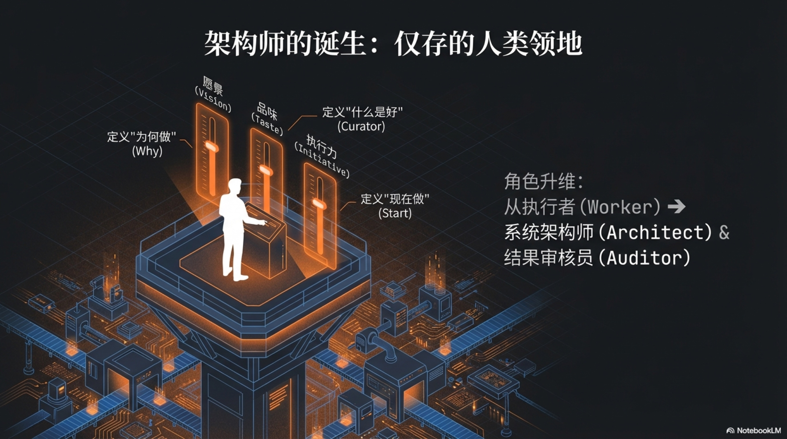

1.3 仅存的人类领地：愿景、品味与执行力

上一章的结论冷酷而清晰：在那台名为“一人独角兽”的商业机器里，你，作为人类架构师，所拥有的注意力是驱动一切的终极能源，是这个帝国赖以运转的“新石油”。
这个结论立刻引出了一个极具挑战性的推论：既然你的每一滴“注意力”都如此宝贵，那么，你到底应该把它“燃烧”在哪里？
当AI能够以接近光速的速度处理几乎所有“如何做”（How）的战术问题时，人类仅存的、也因此价值被无限放大的领地，只剩下那些关乎“做什么”（What）与“为何做”（Why）的战略决策。它们无法被量化，无法被外包，也无法被当前的AI所真正理解。它们构成了人类在智能时代最后的、也是最坚固的三个价值堡垒。
愿景（Vision）：无法编码的人性之锚
第一个，也是最重要的堡垒，是愿景（Vision）。
这绝非那种贴在公司墙上、由公关部门杜撰的漂亮口号。它是一种深植于你个人历史、好奇心与价值观的独特组合，是投资家纳瓦尔·拉维坎特（Naval Ravikant）所定义的“专长”（Specific Knowledge）1。
根据纳瓦尔的理论，“专长”是你无法在学校里学会的知识。它不是通过上课或培训获得的，而是通过追随你内心真正的好奇心，在你认为是“玩耍”而别人认为是“工作”的过程中，慢慢积累起来的。它高度个人化，几乎无法被教授或复制。你对某种音乐的痴迷、对某个历史时期的狂热、对某种罕见昆虫的了解、你童年时一次失败的化学实验……这些看似毫无关联的碎片，共同构成了你独一无二的知识图谱。
在AI时代，这种由个人激情驱动的长期追求，恰恰构成了机器难以逾越的鸿沟。AI的“思考”是基于海量数据的模式匹配和概率计算，它可以在一个明确定义的目标下（例如“提高用户点击率”）做出最优解。但是，它无法从无到有地、真正地“创造”一个值得追求十年以上的目标。它没有童年，没有梦想，没有“心之所向”。
因此，你的愿景，就是你为庞大的AI军团设定的唯一“北极星”。它回答了那个最根本的问题：“我们为什么在这里？”这个“为什么”的答案，决定了你的AI团队究竟是在漫无目的地生产信息垃圾，还是在为一个足以改变世界某个角落的伟大问题而冲锋。AI可以帮你制造出人类历史上所有的交通工具，但最终驶向哪个星系，设定航标的权力，永远在你手中。这就是“架构师”的最高权责：定义目的。没有目的，再强大的执行力也只是一场奔向悬崖的狂欢。
品味（Taste）：无限内容时代的经济护城河
第二个堡垒，是品味（Taste）。
当AI能在一秒钟内生成一千张图片、一万篇文章时，“创造”本身已经极度通货膨胀。如果你还认为自己的价值在于“从零到一”地创造内容，那么你正站在被AI浪潮淹没的沙滩上。在内容无限的时代，真正的稀缺性已经从“创造”转移到了“选择”。
这正是史蒂夫·乔布斯（Steve Jobs）终其一生都在向世界展示的核心能力。品味，表面上是对“美”的感知，其本质却是一种对“好”的苛刻判断力，以及一种构建和引领共识的强大能力2。
想象一下，你走进一个巨大的、永恒的博物馆，馆藏着由AI生成的、无穷无尽的艺术品。每一件都技巧纯熟，符合所有美学理论。在这种情况下，“画家”的角色已经无足轻重，而 **“策展人”（Curator）**的角色变得至关重要。是策展人决定了哪些作品被展出，以何种顺序呈现，以及如何通过组合与叙事，赋予这些独立的画作一个统一的主题和灵魂。
你的品味，就是你在AI生成的信息海洋中扮演“策展人”的能力。它决定了你的产品呈现出何种气质，你的品牌传递出何种调性，你的内容拥有何种风格。为什么用户会选择你的AI生成的播客，而不是其他一千个同样由AI生成的播客？答案就在于你的品味。是你的品味筛选并吸引了那些与你拥有相同价值观和审美的追随者，构建起一个无法被轻易复制的“品牌社群”。
这催生了“策展经济学”（Curation Economy）的诞生。当信息生产成本趋近于零，为用户节省“选择成本”本身就创造了巨大的经济价值3。一个拥有卓越品味的架构师，可以通过向AI下达精确的、带有强烈个人风格的指令，持续地输出高质量、风格一致的内容，从而建立起自己的“品味护城河”。这道护城河保护的不是生产能力，而是用户的信任与追随。这是“审核员”（Auditor）角色的终极体现：在无限的可能性中，定义唯一的“正确性”。
执行力（Initiative）：从0到1的意志
第三个，也是最根本的堡垒，是执行力（Initiative）。
一个流传于创业圈的古老箴言是：“想法一文不值，执行才是一切”4。在AI时代，这句箴言的正确性被放大了无数倍。当AI可以在一夜之间为你生成一百个商业计划书、一千个增长策略时，“有一个好想法”已经彻底失去了它的稀缺性。真正的瓶颈，也是人类最后的价值高地，在于将那个“好想法”转化为现实世界中第一个粗糙产品的意志。
AI拥有强大的“执行能力”，但它没有“执行力”。它能完美地执行你的每一个指令，但它自身没有发起任何行动的内在冲动。它是一个被动的、等待指令的引擎，而人类架构师，必须是那个按下“启动”按钮，并为引擎提供燃料的人。这种从0到1的启动意志，我们可以称之为“执行力”。它由两种紧密相连的、AI无法模仿的人类特质所构成。
第一种特质，是“行动偏见”（Bias for Action）。
这是亚马逊公司奉为圭臬的核心领导力准则之一5。它倡导一种“先开枪，后瞄准”的文化，即在面对不确定的未来时，宁愿选择快速行动、在实践中学习，也不要陷入无休止的“分析瘫痪”。许多决策并非生死攸关，其后果是可逆的。等待完美的信息和万全的计划，是扼杀创新和机遇的罪魁祸首。
AI的出现，恰恰为这种“行动偏见”提供了前所未有的武器。你可以让AI在几分钟内为你搭建一个产品原型、一个落地页、一份市场调查问卷。你测试一个想法的成本和周期被压缩到了极致。然而，AI无法替你做出那个“开始测试”的决定。架构师的“执行力”就体现在这里：是沉浸在AI生成的无数个“可能性”中洋洋自得，还是选择其中一个，立刻投入真实的市场，去获取一次哪怕是失败的反馈？拥有“行动偏见”的人，会本能地选择后者。
第二种特质，是“坚毅”（Grit）。
如果说“行动偏见”决定了你是否能从0走到0.1，那么“坚毅”则决定了你是否能从0.1走到1，并最终走向100。著名心理学家安吉拉·杜克沃斯（Angela Duckworth）将“坚毅”定义为“对长期目标的激情与毅力”6。她的研究表明，在任何领域，最终决定一个人成败的，往往不是天赋，而是这种近乎顽固的、面对挫折和枯燥时永不放弃的品质。
将一个想法变为现实的过程，从来不是一条坦途，它必然充满了错误、失败和令人沮-丧的“黑暗时刻”。AI可以帮你修正代码里的Bug，但它无法在你面对用户无人问津、投资人拒绝、竞争对手抄袭时，为你提供坚持下去的心理能量。这种能量，源于你对“愿景”的深信不疑（激情），以及一种超越理性的乐观主义（毅力）。这是一种纯粹的人类情感，一种混合了希望、欲望、野心和责任感的复杂驱动力。AI没有情感，也就无所谓“坚毅”。
因此，AI时代的“执行力”，是“行动偏见”与“坚毅”的结合体。它共同构成了人类架构师从“拥有想法”到“创造价值”之间那道最宽鸿沟的桥梁。它是一种无法被AI替代的、深刻的个人意志。
愿景、品味、执行力——这三者共同构成了AI时代“架构师”的皇冠。它们是你仅存的、无法被替代的领地，也是你驾驭AI军团，去开疆拓土所需的最核心的人类杠杆。它们共同定义了你的商业体最终能抵达的高度、呈现出的样貌，以及演进的速度。
掌握了这三项属人的核心能力，下一步，就是去理解如何将它们与AI这个史无前例的“元杠杆”相结合，从而撬动整个世界。
-
纳瓦尔的“专长”理论强调其高度个人化和激情驱动的特性，这使其难以被标准化教学或AI模仿。参考其博客文章。 Naval Ravikant on Specific Knowledge ↩
-
在信息爆炸的时代，品味作为一种筛选和建立共识的能力，其经济价值愈发凸显。乔布斯对产品细节的苛刻要求，本质上是在用他的品味为苹果的用户构建一个独特的价值主张。 ↩
-
“策展经济学”的核心在于，通过专业的筛选和组织，为消费者节省在海量信息中寻找价值的时间和认知成本，从而创造新的经济模式。参考相关讨论文章。 The Curation Economy ↩
-
“想法很廉价，执行定成败”是创业和商业领域的共识，强调了将概念转化为实际成果的决定性重要。参考 OnPoint Consulting 的文章, “Execution Is The Bridge Between Ideas and Results”。 文章链接 ↩
-
“行动偏见”是亚马逊公司的核心领导力准则之一，强调在商业中速度的重要性，以及在可以承担风险的情况下，快速决策并采取行动。参考 Niagara Institute 的文章, “How To Use Amazon’s Bias For Action Leadership Principle”。 文章链接 ↩
-
“坚毅”（Grit）由心理学家安吉拉·杜克沃斯提出，她认为对长期目标的激情和毅力是预测成功的重要因素。参考她在 TED 上的著名演讲, “Grit: The power of passion and perseverance”。 演讲链接 ↩